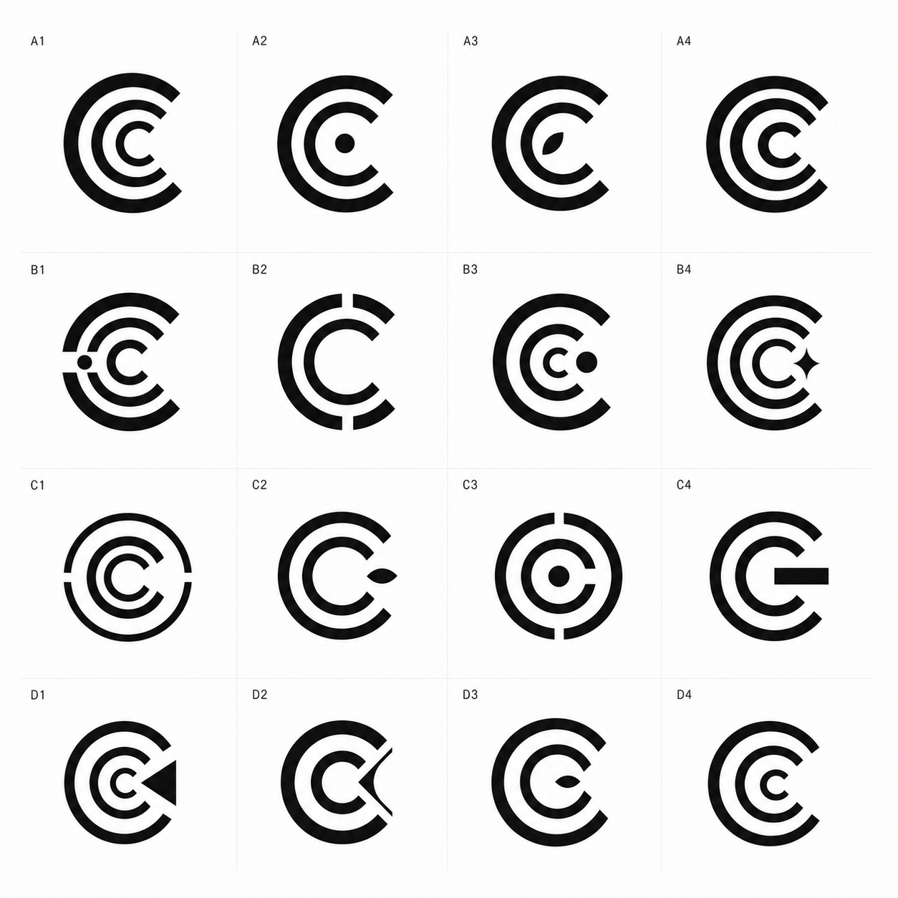
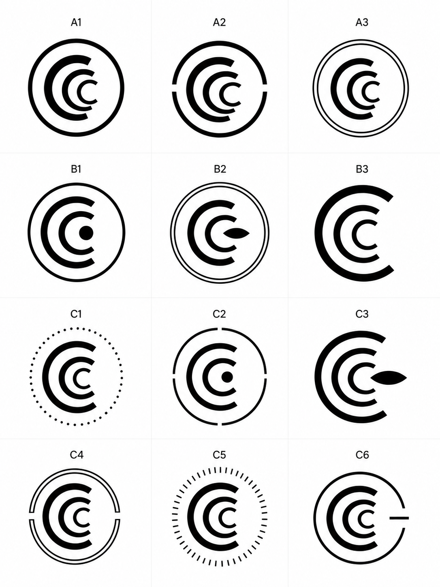
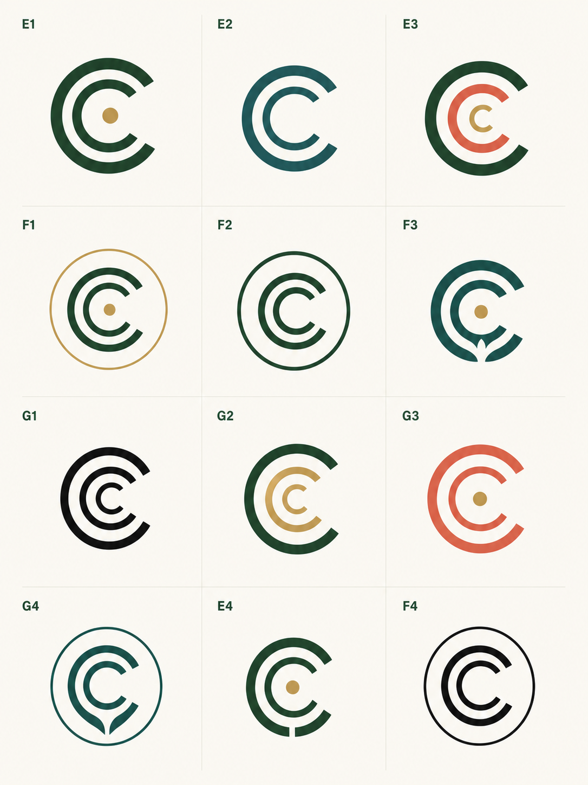

Minimal Badge Logo Exploration
D2 is still the only approved route. This page explores a different badge path and does not replace it.
The approved source works because one C endpoint at a time resolves against the center dot.
Three same-direction C forms, nested or progressively smaller, with optional subtle leaf space.
Black and white first, then restrained flat color. No texture, no pins, no stationery in this pass.
Protected D2 Reference
Do Not Spoil This Route
The active D2 source remains the approved visual reference. The fresh replication test is not source.
- Keep the gold dot as the connection point and catalyst.
- One C endpoint should relate to the dot at a time.
- The C endpoint curve should feel tangent to the dot's circle.
- Do not aim every C toward the center unless selected as a new construction idea.
- Do not use this D2 asset as a dumping ground for new exploration.
New Badge Branch

Useful for pure black-and-white read, but too many cells lean target, radar, or signal icon. This is a control sheet, not the lead direction.
images/generated-boards/badge-minimal-exploration/badge-minimal-bw-contrast-sheet-2026-06-05.png
This is the closest to the new ask. A1, A2, A3, C1, C4, and C5 are the best candidates to inspect. B2 and C3 make the leaf too explicit.
images/generated-boards/badge-minimal-exploration/badge-minimal-three-c-badge-sheet-2026-06-05.png
Useful for palette behavior. E1, F1, F3, G2, and F4 have the best next-round potential. Watch label order, target read, and overly visible leaf hints.
images/generated-boards/badge-minimal-exploration/badge-minimal-flat-color-sheet-2026-06-05.pngCurrent Read
- Board 2 A1, A2, A3, C1, C4, and C5.
- Board 3 E1, F1, F3, G2, and F4.
- Nested three-C badge logic with flat black-and-white discipline.
- Target, radar, Wi-Fi, and generic signal reads.
- Literal leaf forms in Board 2 B2, Board 2 C3, Board 3 F3, and Board 3 G4.
- Any mark that becomes a single C instead of three C components.
- Refine only the strongest nested badge candidates.
- Keep Cs same-direction, component-like, and vector-friendly.
- Make the leaf cue negative-space only, never the first read.